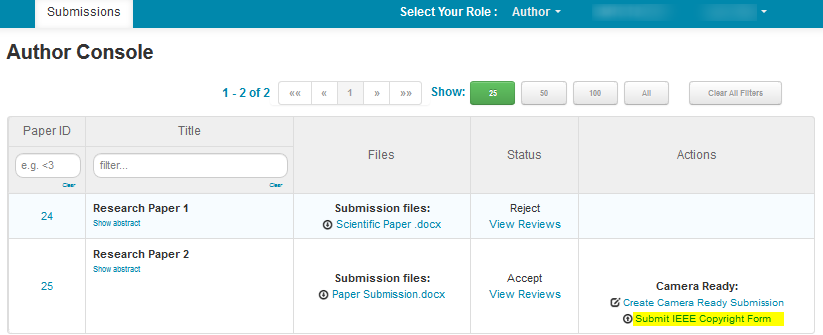

Peer Review and Notification
Submitted manuscripts are subject to a single-blind peer review process. Authors of submitted papers will be
notified of the review outcome via email; see the sidebar for important dates regarding submission.
Authors of accepted submissions will be invited to present their paper via an oral or poster presentation.
In order for a paper to be published in the conference proceedings, at leaset one author must register and
present at the conference. Remote presentations will be available, but in-person presentations are preferred.
Camera-Ready Paper Format
If your paper is accepted for publication, please follow the instructions below to prepare your
camera-ready files. Ensure that you start this process early in case of any delays in the process.
1: Revise the Paper
You should have received a list of required revisions from the reviewers via email. Please take
these comments carefully into account when preparing your camera-ready paper, and improve your writing
when it is necessary and possible.
2: Use the correct template
To help ensure correct formatting, please use the IEEE style files for conference proceedings as a
template for your submission. These include LaTeX and Word style files. The MS Word and LaTeX instructions
and templates can be found on the IEEE website.
The following requirements also apply:
- Only papers in PDF format will be accepted.
- Papers a limited to a maximum of six pages including figures, tables, and references.
- No page numbers please. We will insert the page numbers for you.
Please Note: Violations of any of the above specifications may result in rejection
of your paper.
3: Verify your manuscript with PDF eXpress™
Before submission you must verify that your manuscript is ready for inclusion in IEEE Xplore® via
PDF eXpress™.
-
Before Creating a PDF:
Proofread your source document thoroughly before creating a PDF. No revisions should be needed
after this point.
-
Creating Your PDF eXpress™ Account:
Log in to the IEEE PDF eXpress™ site.
First-time users:
- Create an account.
- Enter: 72751X for Conference ID, your email address, and a password.
- Continue as prompted. A confirmation will be displayed and emailed to you.
Previous users:
Follow the same steps using your existing password. Verify that your contact information is current.
Support:
Visit the IEEE Support Center
or email PDFSupport@ieee.org if your question is not answered there.
4: Complete the IEEE Copyright Transfer Form
You must complete the IEEE Copyright Transfer form for your publication to appear in the IVCNZ 2026 proceedings.
You can do this through the CMT Author Console,
as shown below:

5: Upload Your Formatted Manuscript to CMT
You are now ready to upload your complete manuscript to the CMT Author Console. You can find instructions on how
to do this in the CMT Help Centre.
Please first ensure that all above steps have been completed; failure to do so may result in your paper
being withdrawn from the IVCNZ 2026 proceedings.
Please also ensure that all authors and their affiliations are correctly reflected in the submission system as it will
not be possible to change the author list after the manuscript is submitted.